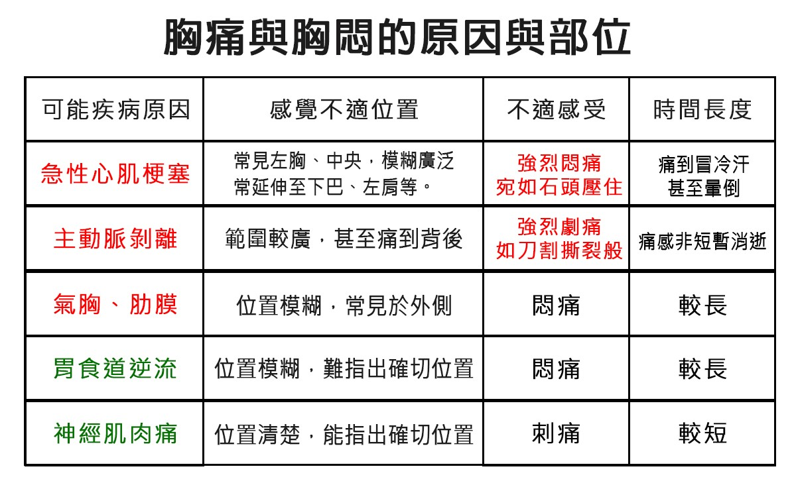

胸悶
科普
造成胸悶原因可能有以下幾種:
1. 心臟疾病：一般來說，心臟問題引起的胸悶，會有有悶痛感外，改變姿勢後疼痛感並不會改變。
冠狀動脈阻塞，典型的症狀是「運動、心臟跳動加速時，胸會悶痛、疼痛」。
因此，運動後覺得胸痛甚至背痛，可能要去檢查心臟的相關功能。要儘快到急診、或是心臟內科門診診治。
2. 肺部疾病：肺部疾病引起的胸悶痛，會伴隨呼吸異常，像是咳嗽，喘，呼吸困難等症狀。
肺部疾病要影響到肋膜、或是壓迫到神經的時候才會有疼痛感，所以疼痛的症狀並不太明顯。
如果是感染引起的肺炎等，會加上發燒等感染症狀。
3. 胃部疾病：沒錯，胃部疾病也會有胸悶痛感，而且跟真正心肌梗塞引起的胸悶痛會很像。
胃食道逆流是引起胸痛的常見原因之一，有些胃酸逆流到食道，甚至到口腔，會讓胸口產生一種灼熱感。
這類胸悶痛經常在進食後、坐著或躺下時感覺更不舒服。
4. 肌肉拉傷：肌肉受傷發炎，就會有明顯的壓痛點，而且改變姿勢時會更疼痛。
這種疼痛感覺會比較淺層的痛，按壓時可以明確的找到痛點，
改變姿勢會改變疼痛的嚴重度，就非常可能是肌肉拉傷的胸悶痛。
5. 心理因素：壓力焦慮，甚至是慮病症引起的胸悶痛。
如果胸悶痛時，轉移一下注意力，比方去做其他事情就沒有持續。
或者運動時，胸悶痛不但沒有加劇，反而消失了，通常是壓力引起的。
胸痛胸悶怎麼辦？
1.若感覺刺痛、位置清楚、時間較短，較可能神經肌肉痛。
神經肌肉痛是常見的胸痛原因之一，主要原因是出自於體位變化所起，
例如長時間埋頭寫字、閱讀、打電動等，以刺痛為主要的表現，且位置清楚，時間往往較短。
此等情況一般不用太擔心，待時間片刻緩解即可。
2.若悶痛點或感覺大致在胸腔中間，其位置無法精確指出，
則可能有很大的機率為胃食道逆流，建議尋求胃腸肝膽科醫師進一步檢查，
若確定是胃食道逆流產生的悶痛感，建議立即改善生活模式，避免攝取過多咖啡與甜食，相對症狀會有所改善。

1.若感覺刺痛、位置清楚、時間較短，較可能神經肌肉痛。
神經肌肉痛是常見的胸痛原因之一，主要原因是出自於體位變化所起，
例如長時間埋頭寫字、閱讀、打電動等，以刺痛為主要的表現，且位置清楚，時間往往較短。
此等情況一般不用太擔心，待時間片刻緩解即可。
2.若悶痛點或感覺大致在胸腔中間，其位置無法精確指出，
則可能有很大的機率為胃食道逆流，建議尋求胃腸肝膽科醫師進一步檢查，
若確定是胃食道逆流產生的悶痛感，建議立即改善生活模式，避免攝取過多咖啡與甜食，相對症狀會有所改善。
資料來源:澄清醫院中港分院、東元綜合醫院